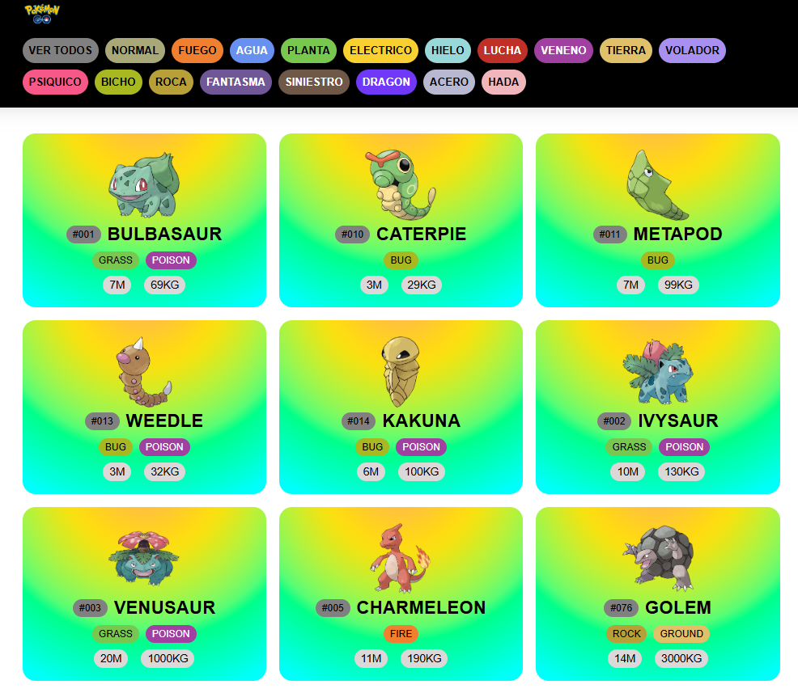
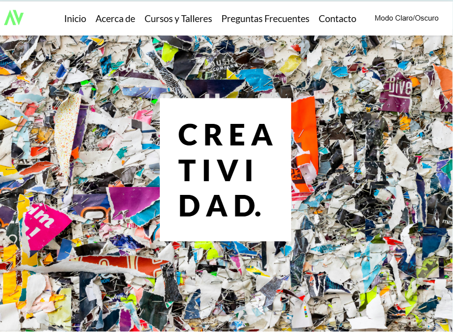
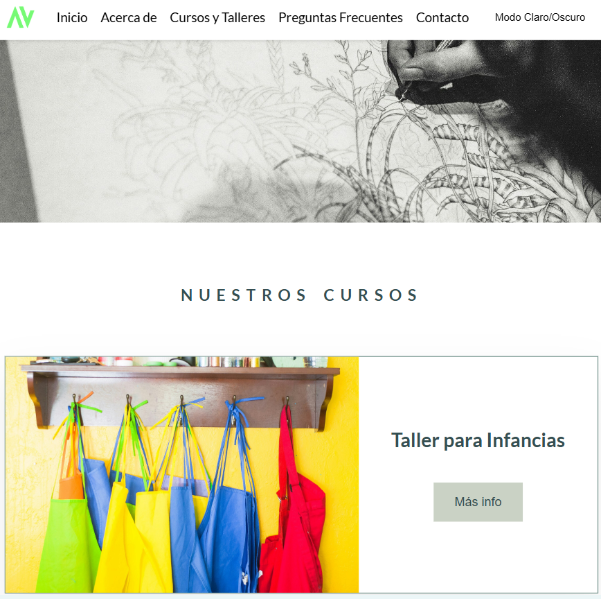
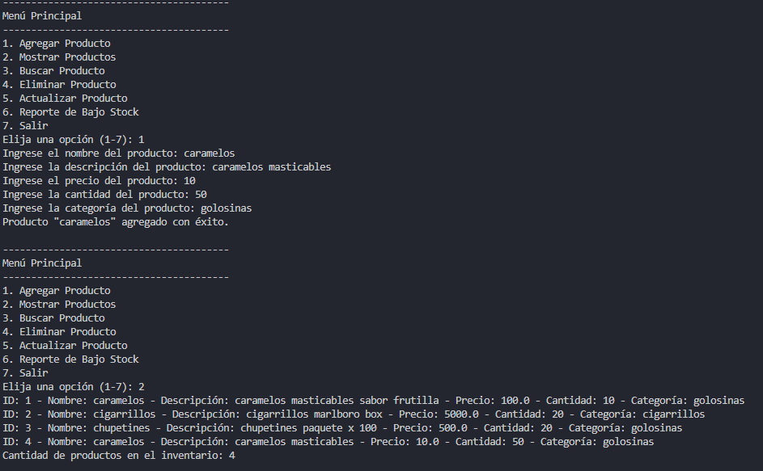
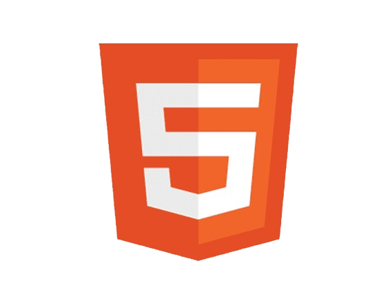
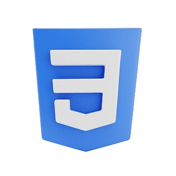
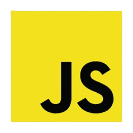
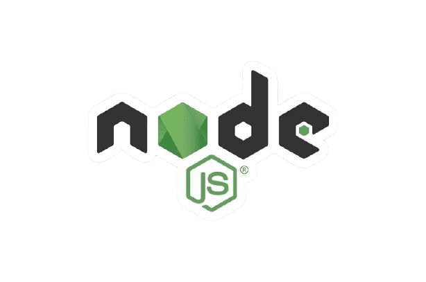
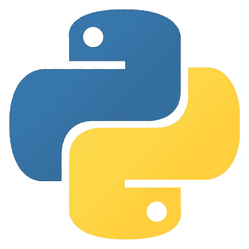
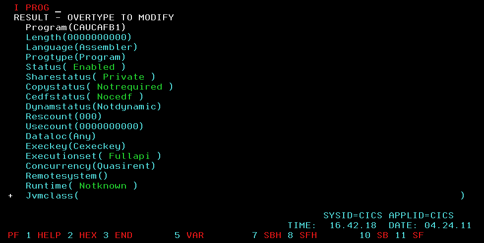

Sobre mi
¡Hola! Soy Sandra, programadora con una fuerte vocación por la tecnología y una historia marcada por la curiosidad, la constancia y el deseo permanente de superación. Mi camino en el mundo IT comenzó más tarde de lo habitual, pero con la convicción de que nunca es tarde para reinventarse y construir algo propio. Lo que empezó como una exploración a través de videos en YouTube pronto se transformó en una verdadera pasión por la programación y la resolución de problemas. Impulsada por ese entusiasmo, inicié mi formación de manera autodidacta y luego la consolidé a través de diversos cursos que ampliaron y fortalecieron mis competencias técnicas. En 2023, realicé Desarrollo Frontend en ADA y Desarrollo Web con JavaScript en Codo a Codo, donde adquirí bases sólidas en desarrollo web y lógica de programación. En 2024, profundicé mis conocimientos con Introducción a la Programación con Python (Talento Tech), y durante 2025 continué expandiendo mi perfil técnico con formación en Análisis de Datos con Python, Business Intelligence, Back-End con Node.js (Talento Tech) y Desarrollador COBOL (Codeki – UBA), incorporando tanto tecnologías actuales como lenguajes utilizados en entornos corporativos y sistemas críticos. Mi objetivo es seguir ganando experiencia real, colaborar en proyectos desafiantes y aportar valor desde una mirada analítica, responsable y colaborativa. Me caracterizo por mi motivación constante, capacidad de aprendizaje, compromiso con el trabajo en equipo y una actitud proactiva frente a nuevos desafíos. Estoy convencida de que la combinación entre formación continua, esfuerzo y pasión es la clave para crecer en este universo tan dinámico. Si buscás a alguien con determinación, energía y muchas ganas de aprender y aportar, estoy lista para el desafío.
Algunos de mis proyectos
Poquedex
Se desarrolló un sitio web que muestra información detallada de todos los Pokémon, incluyendo sus evoluciones y características principales. Los datos se obtienen dinámicamente a través de una API, asegurando información actualizada.
Arte Vivo - Frontend
Se creó un sitio web que presenta información detallada sobre todos los cursos ofrecidos por el Instituto de Artes Visuales. La plataforma está diseñada para ser intuitiva y atractiva.
Arte Vivo - Backend
Se utilizó una base de datos alojada en la nube para gestionar y suministrar la información que se muestra en pantalla. Esta base de datos fue diseñada utilizando SQL y phpMyAdmin.
Inventario
Se desarrolló un sistema de inventario basado en consola, que incluye un menú interactivo con opciones para agregar, modificar, eliminar y gestionar productos.
Habilidades
Frontend
HTML
Principiante
CSS
Principiante
JS
Principiante
Backend
JS
Principiante
NODE JS
Principiante
PYTHON
Principiante
SQL
Principiante
COBOL
Principiante
CICS
Principiante